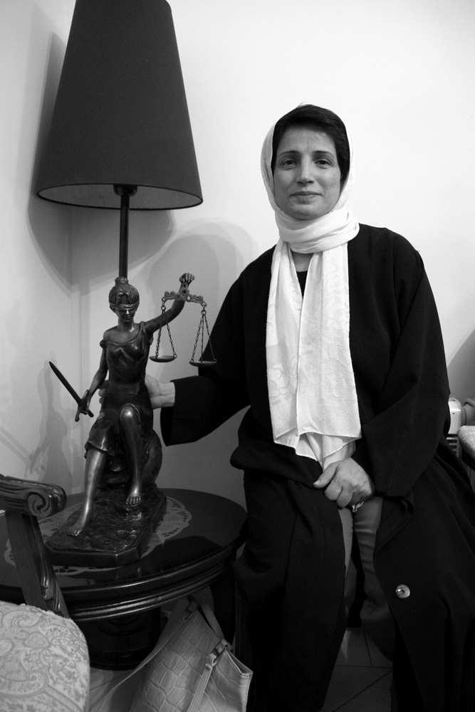

|
|

روزشمار اعتصاب غذای نسرین ستوده / ویدئو
چهار شنبه8 آذر 1391
تغییر برای برابری: نسرین ستوده، حقوقدان، وکیل دادگستری و فعال اجتماعی، چهل و دومین روز اعتصاب غذای خود را پشت سر میگذارد. این در حالیست که رضا خندان همسر وی در صفحهی فیسبوک خود از وخامت حال وی خبر داده و نوشته است:
«قصد ایجاد نگرانی بین دوستان ندارم
احساس خطر مجبورم میکند که هشدار را داده باشم.
نسرین از دیروز که وارد چهل و یکمین روز اعتصاب غذا شده است وضع جسمی اش به مرحله ی خطرناک رسیده است.
دیروز به بهداری منتقل شده است و از این به بعد قرار شده است که هر روز به بهداری برود. فشارش آنقدر پایین بوده است که شخصی که فشار خونش را اندازه گیری کرده نتوانسته اندازه اش را به او بگوید.
مسولین قوه ی قضاییه میتوانند همه چیز را انکار کنند اما واقعیت همیشه مثل آوار بر سر کسانی که خود را به بیراهه میزنند آوار می شود. توجیه و فرافکنی و پاک کردن صورت مسئله هم مشکل را حل نخواهد نمی کند.
نسرین خواسته ی غیر قانونی ندارد.
او میگوید: "چرا بچه ی 12 ساله ی ما را به خاطر مادر مجازات می کنید!!؟
کسی تا این لحظه در این دستگاه عریض و طویل قضایی به این سوال قانونی و بدیهی پاسخ نداده است.»
تغییر برای برابری ویدئوی زیر که روزشماری از اعتصاب غذای نسرین ستوده است را به او تقدیم میکند و ضمن اعلام همراهی با نسرین امیدوار است دستگاه قضایی صدای عدالت طلبی او و خواستهی قانونیش را بشنوند و بیش از شرایطی فراهم نیاوردند که یک زندانی برای حمایت از خانوادهی خود مجبور به دستمایه کردن جان خود شود.